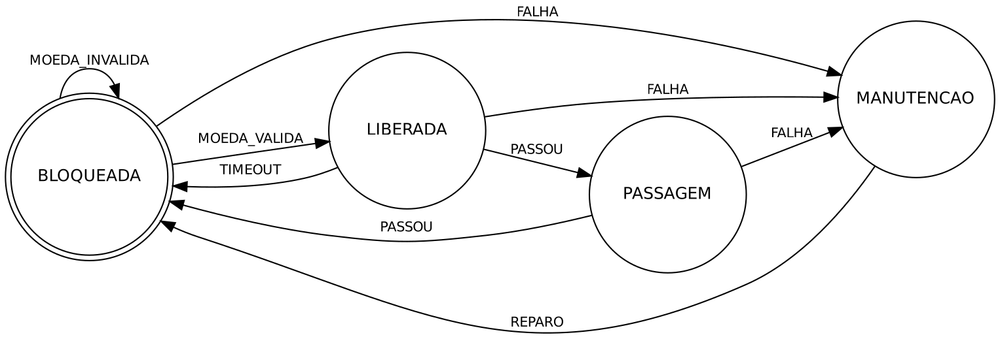

Disciplina: Sistemas Computacionais · Grupo 8 · Modalidade: em grupo
Integrantes: [preencher nomes] | Repositório Git: [inserir link]
Modelamos o comportamento de uma catraca de metrô. A catraca permanece bloqueada até que uma moeda ou bilhete válido seja apresentado. Com a catraca liberada, o usuário passa, e o sensor de passagem faz a catraca bloquear novamente. Se o usuário não passar a tempo, a catraca volta a bloquear por timeout. Em caso de falha mecânica ou eletrônica, a catraca entra em manutenção até ser reparada.
BLOQUEADA.BLOQUEADA → LIBERADA).PASSAGEM e, ao concluir a passagem, de volta a BLOQUEADA.MANUTENCAO.BLOQUEADA.| Estado | Descrição |
|---|---|
BLOQUEADA | Estado inicial. Catraca travada, aguardando moeda válida. |
LIBERADA | Moeda validada. A passagem está liberada por tempo limitado. |
PASSAGEM | Usuário atravessando. O sensor ainda não detectou a saída. |
MANUTENCAO | Falha detectada. Catraca fora de operação até o reparo. |
| Evento | Origem |
|---|---|
MOEDA_VALIDA | Leitor de moedas/bilhetes aceita o crédito. |
MOEDA_INVALIDA | Leitor rejeita o crédito. |
PASSOU | Sensor de passagem detecta o usuário. |
TIMEOUT | Temporizador de liberação expira. |
FALHA | Diagnóstico interno detecta defeito. |
REPARO | Técnico conclui a manutenção. |
| ID | Estado atual | Evento | Próximo estado |
|---|---|---|---|
| T1 | BLOQUEADA | MOEDA_VALIDA | LIBERADA |
| T2 | BLOQUEADA | MOEDA_INVALIDA | BLOQUEADA |
| T3 | BLOQUEADA | FALHA | MANUTENCAO |
| T4 | LIBERADA | PASSOU | PASSAGEM |
| T5 | LIBERADA | TIMEOUT | BLOQUEADA |
| T6 | LIBERADA | FALHA | MANUTENCAO |
| T7 | PASSAGEM | PASSOU | BLOQUEADA |
| T8 | PASSAGEM | FALHA | MANUTENCAO |
| T9 | MANUTENCAO | REPARO | BLOQUEADA |
As transições ficam em uma tabela estática. A função proximo_estado percorre a tabela e retorna o destino, ou o próprio estado atual quando não há transição mapeada:
Estado proximo_estado(Estado atual, Evento evento)
{
for (int i = 0; i < NUM_TRANSICOES; i++) {
if (TABELA[i].origem == atual && TABELA[i].evento == evento) {
return TABELA[i].destino;
}
}
return atual; /* evento ignorado */
}

Figura 1: Diagrama de estados da catraca. O círculo duplo indica o estado inicial. Os rótulos das setas são os eventos.
Os caminhos abaixo cobrem combinações de transições, incluindo casos de passagem normal, timeout, falha em diferentes estados e eventos ignorados.
| Caminho | Sequência de estados e eventos | Estado final esperado |
|---|---|---|
| P1 | BLOQUEADA –MOEDA_INVALIDA→ BLOQUEADA | BLOQUEADA |
| P2 | BLOQUEADA –MOEDA_VALIDA→ LIBERADA –PASSOU→ PASSAGEM –PASSOU→ BLOQUEADA | BLOQUEADA |
| P3 | BLOQUEADA –MOEDA_VALIDA→ LIBERADA –TIMEOUT→ BLOQUEADA | BLOQUEADA |
| P4 | BLOQUEADA –FALHA→ MANUTENCAO –REPARO→ BLOQUEADA | BLOQUEADA |
| P5 | BLOQUEADA –MOEDA_VALIDA→ LIBERADA –FALHA→ MANUTENCAO –FALHA→ MANUTENCAO –MOEDA_VALIDA→ MANUTENCAO –PASSOU→ MANUTENCAO | MANUTENCAO |
| P6 | BLOQUEADA –MOEDA_VALIDA→ LIBERADA –PASSOU→ PASSAGEM –FALHA→ MANUTENCAO | MANUTENCAO |
| P7 | BLOQUEADA –MOEDA_VALIDA→ LIBERADA –PASSOU→ PASSAGEM –TIMEOUT→ PASSAGEM –MOEDA_VALIDA→ PASSAGEM | PASSAGEM |
A complexidade ciclomática V(G) mede o número de caminhos independentes de uma função e é calculada por V(G) = E − N + 2P, onde E são as arestas, N os nós e P os componentes conectados do grafo de controle. Em funções com decisões simples, equivale a número de pontos de decisão + 1. Cada nó de decisão (if, for, && e cada case) acrescenta um caminho.
A tabela abaixo foi calculada com a ferramenta lizard sobre src/maquina.c. Ela conta o default dos switch como um caminho adicional.
| Função | Pontos de decisão | V(G) | Caminhos básicos a cobrir |
|---|---|---|---|
proximo_estado | for, if, && | 4 | 4 |
nome_estado | switch com 4 case + default | 5 | 5 |
nome_evento | switch com 6 case + default | 7 | 7 |
Para proximo_estado, os quatro caminhos básicos são:
BLOQUEADA com MOEDA_VALIDA, retorna LIBERADA).BLOQUEADA com PASSOU), e a busca continua.Cada um desses caminhos é exercitado pelos testes de transições (seção 5.2). Para nome_estado e nome_evento, cada case e o default têm teste próprio.
Relação com os caminhos independentes da seção 4: os caminhos P1 a P7 são comportamentos da máquina, descritos como sequências de estados e eventos. A complexidade ciclomática é uma métrica do código, por função. Por isso, o número de caminhos P1 a P7 não precisa ser igual aos valores de V(G) da tabela.
Todos os testes são automatizados, em C, e executados com make test. O código completo está no repositório Git. Aqui são mostrados apenas os trechos citados.
Verificam que cada um dos quatro estados é alcançável a partir de alguma transição e que possui nome válido. Também cobrem os seis nomes de evento e o default de nome_estado e nome_evento.
CHECAR(proximo_estado(EST_BLOQUEADA, EVT_MOEDA_VALIDA) == EST_LIBERADA,
"LIBERADA deve ser alcançável por moeda válida");
Cobertura: 4 de 4 estados.
Há um teste para cada uma das nove transições da tabela (T1 a T9). Também são testados seis eventos ignorados, que devem manter o estado atual.
CHECAR(proximo_estado(EST_PASSAGEM, EVT_FALHA) == EST_MANUTENCAO,
"T8: PASSAGEM --FALHA--> MANUTENCAO");
Cobertura: 9 de 9 transições.
Cada caminho da seção 4 é executado como uma sequência de eventos a partir do estado inicial. O estado final é comparado com o valor esperado.
/* P5: falha durante a liberação, com eventos ignorados em manutenção */
{
Evento e[] = { EVT_MOEDA_VALIDA, EVT_FALHA, EVT_FALHA,
EVT_MOEDA_VALIDA, EVT_PASSOU };
CHECAR(executar(EST_BLOQUEADA, e, 5) == EST_MANUTENCAO, "P5 falhou");
}
Cobertura: 7 de 7 caminhos.
=== Testes da Máquina de Estados (Catraca) === [Testes de estados] [Testes de transições] [Testes de caminhos independentes] Resultado: 38 de 38 verificações passaram.
[Preencher com a síntese do grupo: principais dificuldades, decisões de modelagem, como a tabela de transições facilitou os testes e o que cada integrante aprendeu.]